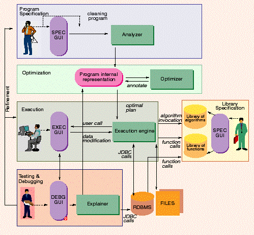

AJAX: an Extensible Data Cleaning Tool
1. IntroductionINRIA, France
Ensuring the quality of data in information systems is crucial for decision-support and business-oriented applications (e.g., electronic mailing, fraud detection, risk analysis, etc). Data quality concerns arise in three different contexts: when one wants to correct anomalies in a single data source (e.g., duplicate elimination in a file); when poorly structured or unstructured data is migrated into structured data; or when one wants to integrate data coming from multiple sources into a single new data source (e.g., data warehouse construction). The following data quality problems, also called as dirty data, are typically encountered:
2. Scenario demonstrated
We use the AJAX system on a well known problem which is the translation of a database of dirty citations into a set of clean, normalized, redundancy-free relational database tables storing the same data. The initial database consists of a set of bibliographical references extracted from a large, dirty, citations file, extracted via a wrapper from the Computer Science citation Web site. Remark that although this site presents already cleaned data, the original dirty data are still available. The result database contains three tables, respectively storing publication names, author names and publication events (i.e., conferences, journals, etc), all free of approximate duplicates. The database also contains a fourth table storing the correspondences between a publication and its authors, using the new foreign keys pointing to the clean records. The typical problems handled by this application are: different (wrong) spelling for the same article title, author names, and event names, and a wrong list of authors or event names.
The demonstration substantiates the following claimed technical contributions of the AJAX system :
AJAX provides a framework wherein the logic of a data cleaning program is modeled as a directed graph of data transformations that start from some input source data.
Four types of data transformations are distinguished. For simplicity, we explain their meaning in the case of a single data source. The first type of transformation, called mapping, standardizes data formats when possible (e.g. date format) or simply produces records with a more suitable format by applying operations such as column splitting and merging. The second type of transformation, called matching, finds pairs of records that most probably refer to the same real object. Records are compared using the values of one or several fields via a matching criteria that can be arbitrarily complex. A similarity value representing the result of the matching criteria is attached to each pair of compared records, called a matching pair. However, when the records of a single source are compared, matching pairs represent approximate duplicates. A third type of transformation, called clustering, groups together matching pairs with a high similarity value by applying a given grouping criteria (e.g. by transitive closure). Finally, the last type of transformation, called merging, applies to each individual cluster in order to eliminate duplicates or produce new records for the resulting integrated data source.
Thus, each transformation takes as input one or several data flows, and produces as output one or several data flows, globally forming a directed possibly cyclic graph. A data flow consists either of a set of tuples or a set of groups of tuples. The mapping and matching transformations take and return sets of tuples; the clustering transformation takes a set of tuples and returns a set of groups of tuples as output, while the merging converts back a set of groups of tuples into a set of tuples.
AJAX provides an expressive and declarative language for specifying data cleaning programs, which consists of SQL statements enriched with a set of specific primitives to express mapping, matching, clustering and merging transformations. Each of these primitives corresponds to a transformation whose physical implementation takes advantage of existing RDBMS technology. The declarative nature of the language provides opportunities for automatic optimization and facilitates the maintenance of a data cleaning program.
Syntactically, each operator specification has a FROM clause that indicates the input data flow, a CREATE clause, which names the output data flow (for further reference), a SELECT clause specifying the format of the output data and a WHERE clause to filter out non interesting tuples from the input. An optional LET clause describes the transformation that has to be applied to each input item (tuple or group of tuples) in order to produce output items. This clause contains limited imperative primitives: the possibility to define local variables, to call external functions or to control their execution via if/then/else constructs. Finally, the clustering operator includes a BY clause which specifies the grouping algorithm to be applied, among the ones existing in the AJAX library of algorithms. The specifications of the transformations represented on the graph shown earlier are given below.
AJAX is extensible in various ways. Firstly, the predefined transformations can invoke externally defined domain specific functions (e.g., a string comparison function in the case of the matching transformation) that have been previously added to an open library of functions. Secondly, transformations can be combined with pure SQL statements in order to formulate more complex data cleaning programs. Thirdly, the set of algorithms initially provided to implement the clustering transformation can be extended as needed.
4. User Interaction
A rich interactive environment is supplied to the user in order to resolve errors and inconsistencies that cannot be automatically handles and support a stepwise refinement design of data cleaning programs.
The execution of a AJAX program can raise exceptions (e.g. a name has a null value, a name is of type integer, an age is greater than 200). These execptions can be anticipated in the specification of the data cleaning program. For instance, the user-defined function, uniqueString, will raise an exception if the list of strings that it receives as argument is not an atomic list. This is indicated by the declaration of the function within the data cleaning program.
In this case, the data cleaning program can specify two ways of handling the exception: a specific piece of code can be invoked, or a special table containing all the tuples that caused the exception is automatically generated and will presented to the user. The second (default) option is used in the merging transformation that produces table mergeCi. For non anticipated exceptions (e.g. producing errors on an external function call), all tuples that caused the exception are automatically shown to the user.
When the tuples that caused an exception have been produced in a table, the user may first use the functionality of the explainer to select one or several tuples and backtrack in the data cleaning process. For instance, the explainer will display the tuples of ClusterCi that generated the exceptional tuples and the user will be able to edit and modify them. The functionality of the explainer is supported by a conceptual metadata repository that stores annotations about the execution of data cleaning programs describing the transformations with their input/output. AJAX finally enables the construction of auxiliary dictionaries of data (e.g. list of abbreviations and their expansions) during the iterative processing of a data cleaning program. The contents of these dictionaries may be used to reformulate the cleaning criteria and thus anticipate the standardization of fields
5. AJAX architecture
The architecture of the AJAX system includes two types of components: the repositories that manage data or fragments of code and the operational units that constitute the execution core.

There are three repositories in the AJAX system. The relational database management system (RDBMS) stores the input dirty data and the output cleaned data, and is accessible via JDBC. The system also contains a library of functions that can be called within each transformation. It stores the code of the functions, as well as a description of their characteristics to be exploited by the AJAX query optimizer. Examples of such functions are domain-specific functions (e.g. standardization of US addresses) or specific string matching functions (e.g. edit-distance). Finally, the system contains a library of algorithms that implement the clustering transformation (e.g. by transitive closure, by source).
The core of the AJAX system is implemented by the operational units: the analyzer, which parses the cleaning programs; the optimizer, which selects an optimal execution plan for executing a cleaning program; the execution engine, which schedules the tasks composing the selected plan, and the explainer that triggers an audit trail mechanism.
The system is implemented in Java. The RDBMS used is Oracle, version
8i. The demonstration is shown on a PC with Windows NT.